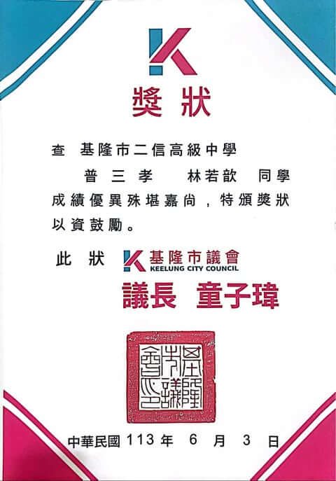

林若歆
學歷:中原大學 資訊管理系
來自:基隆市
生日：95/06/11
- 0908891033
- cindylin950611@mail.com
- c._.0611
「把一天天的努力存起來，讓它變成我喜歡的未來。」
個性 (ISFJ)
對他人的感受特別敏銳，習慣有計畫地做事，喜歡把事情整理清楚。內向但重視穩定、細節和責任感，熟悉後會展現活潑開朗的一面。
優點
重視承諾，會確實落實並跟到最後。溝通方式溫和，在團隊中能夠維持良好的合作關係。
成長方向
有時太考慮他人感受而忽略自己，正在學習在照顧別人情緒的同時也不忽略自己的需求。
興趣
喜歡記錄生活小事，用照片和文字留住美好時刻。看電影是放鬆方式，像是換一個世界呼吸。
專業技能
程式設計
具備基礎程式語法、資料處理與邏輯分析能力，可運用 Python 進行資料整理與過程自動化。
程式設計
熟悉基本語法結構與物件導向思維，能閱讀程式並進行修改，撰寫功能性程式模組。
邏輯分析能力
擁有良好的邏輯推理能力，能將複雜問題拆解成可處理的步驟，善於用結構化方式分析判斷。
資料整理與分析
能進行資料清整、分類、圖表視覺化與基礎統計處理，擅長將繁雜資訊整理成清楚易讀的格式。
成長歷程
高二社團
高中總成就
服務學習
打工經驗
校刊社編輯
高中二年級文字創作與團隊協作
- 參與校刊社編輯團隊，負責撰寫專題報導、校內活動新聞與人物訪談稿件
- 規劃並執行年度出版流程，從主題發想、內容編輯到校對皆有參與
- 擔任採訪組成員，主動與師生交流，培養良好的人際溝通與表達能力
- 熟悉文字編修流程，能針對不同題材運用合適的語氣與結構
- 透過每期刊物的製作，提升組織、規劃及時間管理能力
- 協助新社員訓練與稿件審閱，培養領導與協助他人的經驗
- 在校刊發行過程中學會面對壓力並維持工作品質，展現責任感與團隊精神
文字編輯
團隊領導
時間管理
溝通表達
壓力調適

第 1 張 / 共 7 張
學業成就與幹部經歷
高中三年級班級第二名畢業 · 多重幹部經歷
- 高中階段維持穩定優異學業表現，以班級第二名成績畢業
- 擔任班長，協助導師管理班級事務，培養領導與組織能力
- 擔任學藝股長，紀錄課程進度及協助各科老師與同學之間的溝通
- 擔任數學小老師，協助同學複習解題，提升教學表達能力
- 在學業、幹部與輔導同學三方面皆能兼顧，展現優秀時間管理能力
- 主動關懷同學學習狀況，營造班級正向合作的學習氛圍
學業優異
領導能力
時間管理
溝通協調
教學輔導
第二名
畢業成績
班長
學藝股長
數學小老師

點擊圖片放大
文山關愛之家服務學習
大學一年級暖心同行——文山關愛之家服務學習專案
114年4月26日
專案管理與協調
成功規劃並領導5人服務學習團隊，確保活動流程（分組陪伴、場地維護、影像紀錄與工作人員訪談）於預定時間內順利執行
社會倡議與推廣
透過社群媒體發布服務成果影片，有效提升公眾對育幼院（特別是非本國籍兒童）需求的關注度
4,525 次觀看
能力養成
培養高度同理心、社會責任感，並在服務過程中學習跨部門（嬰幼兒組、兒童組）的協調與分工能力
實際服務參與
積極參與分組陪伴、講故事、場地整理等活動，為孩子提供情感支持，並從實務中體會第一線工作者的辛勞
家庭嬰幼兒生活照護員
大一暑假 · 3個月專業化照護與時間管理實踐
日常基礎照護
執行嬰兒餵食、換尿布、衣物清潔等基礎照護工作，確保孩子得到安全與舒適的環境。
生理與環境監控
學習主動觀察嬰兒的姿勢、肢體動作與生理反應，即時判斷並滿足其需求。
高效時間排程
運用排程思維，將餵奶、哄睡、清潔等工作組織化，有效管理每日例行任務，提升照護效率。
情感支持與互動
透過溫和的陪伴、互動與故事閱讀，提供情緒安撫與早期教育刺激，促進其健康成長。
💡 成果與學習
提升危機處理與突發狀況應變能力
訓練高壓力下的細心度與專注力
強化同理心與非語言溝通能力

「照護經驗讓我學會將專注力與同理心應用在日常生活中。」
細心關愛
責任感
情緒安撫
高效排程